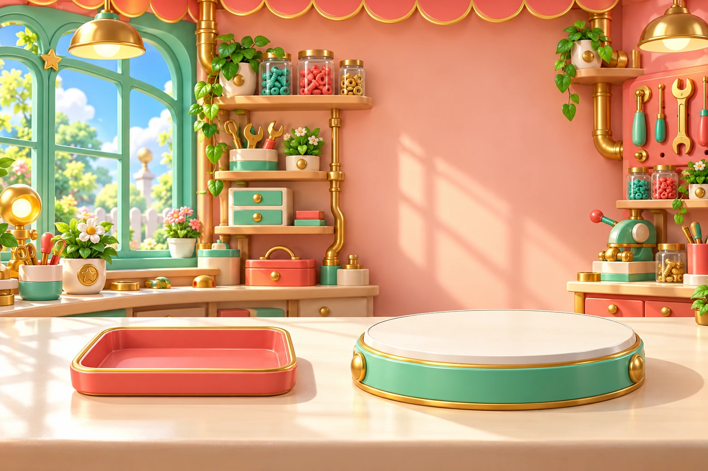
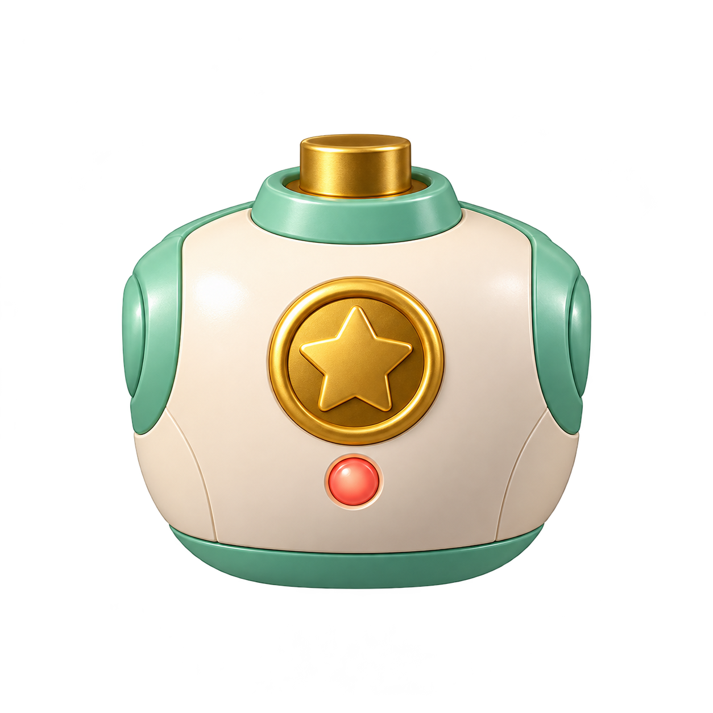
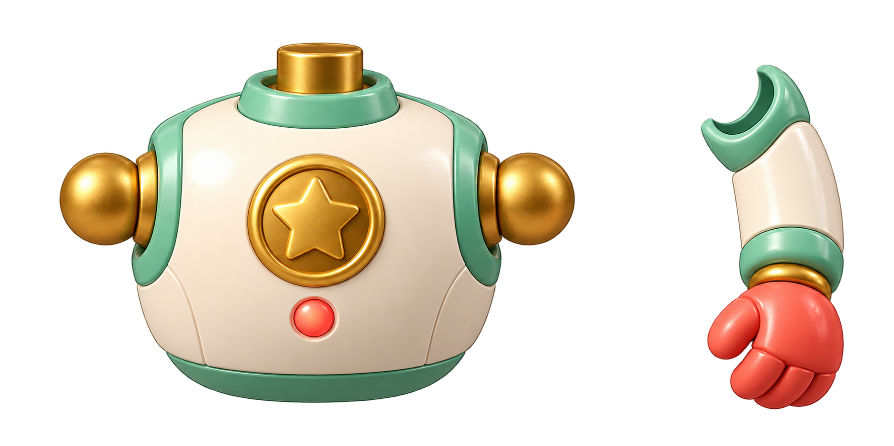
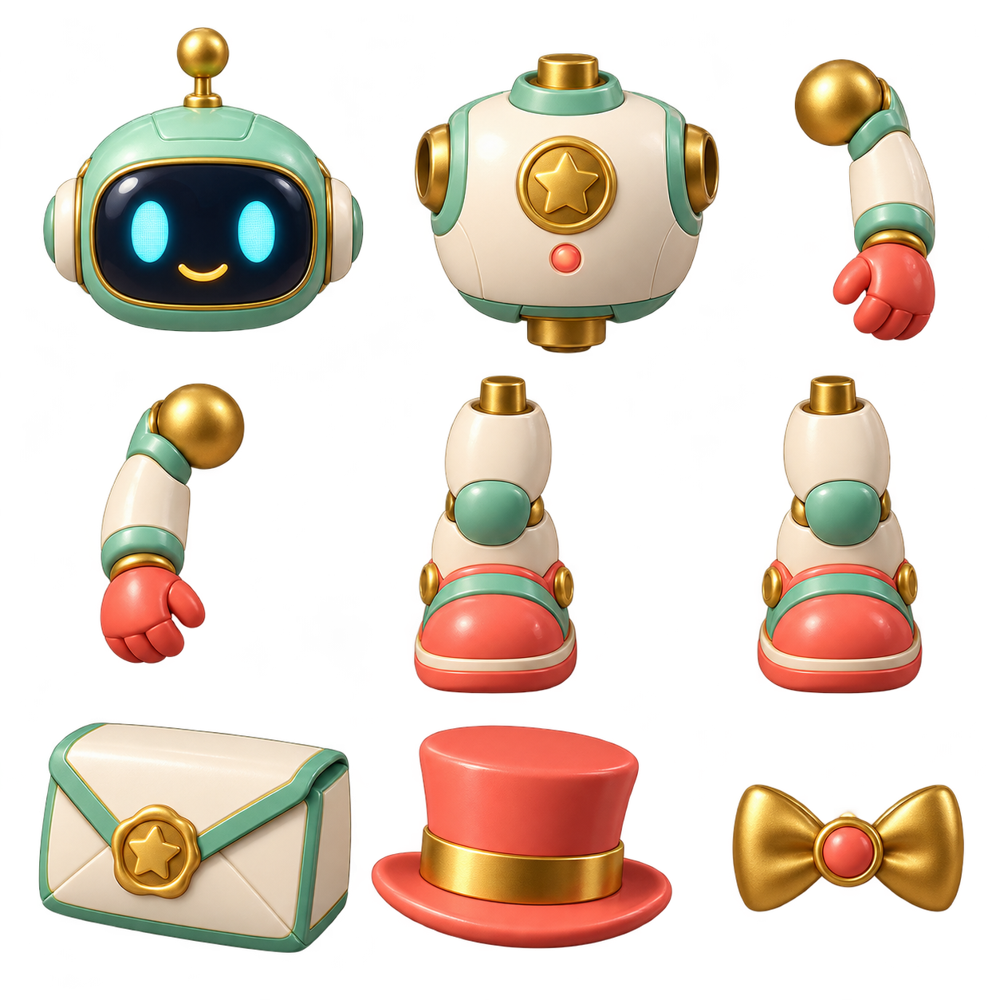
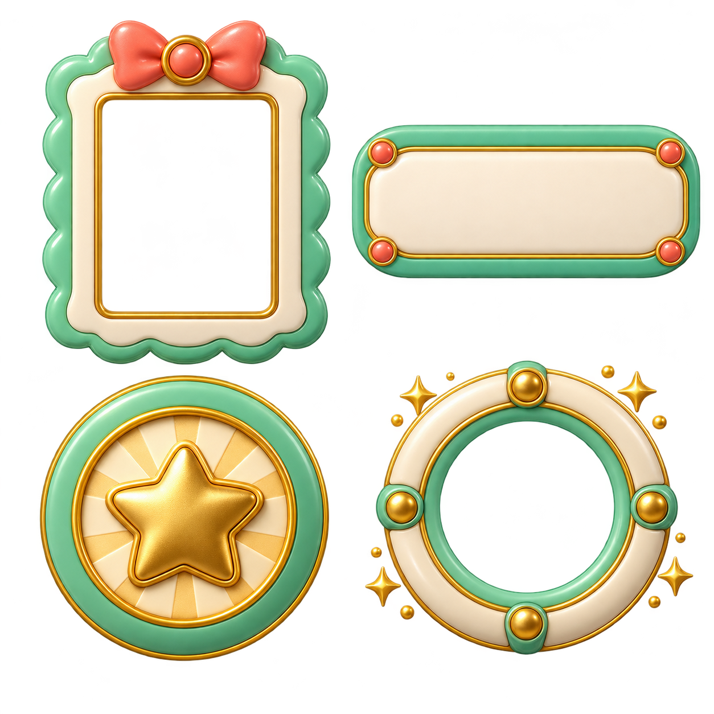

Family Robot Workshop
A matching collection made for this activity: atelier, six assembly parts, mystery envelope, accessories, photo frame, word tile, socket and success medallion.
Play the updated workshop

Environment plate. The robot and all draggable objects are separate layers.
Retired sealed-shoulder iteration; it buried the connection and is not loaded. Current game uses the open sockets and slim arms together from the original atlas below.
Retired ball/cup iteration, preserved as history. Not used by the current game.
Assembly artwork — each object is cropped separately in the game.
Interface artwork — real text stays accessible and uses the app font.Original built-in imagegen artwork. The game uses layered prerendered illustrations with Babylon picking and GSAP motion; these are not freely rotating 3D models. Family portraits and Higgs speech retain the existing approved identities and recordings. Sources and hashes: manifest.